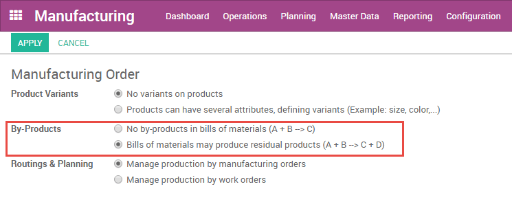
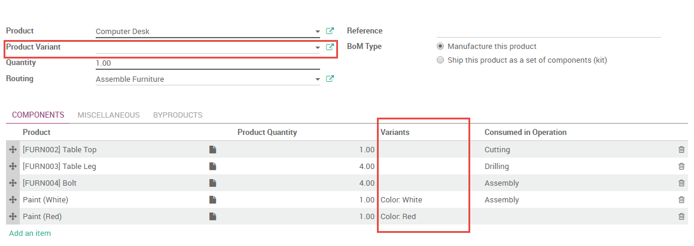

В Спецификация - это документ, который описывает компоненты продукции, количество каждого из компонентов, и процессы, необходимые для производства продукта, в том числе маршруты и отдельные шаги.
В Odoo, каждый продукт может иметь несколько спецификаций, связанных с ним, но каждая Спецификация может быть связана только с одним продуктом. Однако одна спецификация может, содержать описание нескольких вариантов одного товара.
Настройка базовой спецификации
Если вы выбираете для управления производственными операциями только заказы на производство, вам необходимо будет определить основные спецификации без маршрутов. Для получения дополнительной информации о том, какие методы управления использовать, смотрите Начало работы секции главы Производство в документации.
Прежде чем создать свою первую спецификацию, вам нужно создать продукт и по меньшей мере один компонент (компоненты в Odoo это тоже товары). Вы можете это сделать это в , или на лету в соответствующих полях в форме спецификации. Смотрите главу Управление складскими запасами для получения дополнительной информации о конфигурации товаров. После того как вы создали продукт и по меньшей мере один компонент, выберите их из соответствующего выпадающего меню, чтобы добавить их к вашей спецификации. Которые могут быть созданы из :menuselection:[UNKNOWN NODE problematic]Основные данные --> Спецификации, или с помощью кнопки в верхней части формы продукта.
Под вкладкой Разное, вы можете заполнить дополнительные поля. Последовательности определяет порядок, в котором ваши спецификации будут выбраны для производственных заказов, с меньшими числами имеют более высокий приоритет. Версия позволяет отслеживать изменения в спецификации с течением времени.
Добавление маршрута в спецификацию
Маршрут определяет последовательность операций, необходимых для производства продукта и производственного узла, на котором каждая операция выполняется. Маршрут может быть добавлен в несколько спецификаций, а уже спецификация может иметь только один маршрут. Дополнительные сведения о настройке маршрутов, вы найдете в главе о маршрутах.
После включения маршрутов в , вы сможете добавить маршруты в спецификацию выбрав нужный из выпадающего списка или создать его на лету.
Вы можете определить рабочие операции или этапы, где расход каждого компонента определяется через поле, Используется в операциях под вкладкой Комплектующие. Аналогично можно определить операцию в которой продукт будет выпускаться - под вкладкой Разное, используя поле Производится при операции. Если это поле оставлено пустым, продукция будет потребляться/производится в заключительной операции маршрута.
Добавление продукции в спецификацию
В Odoo, побочный продукт - это любой продукт, произведенный по спецификации в дополнение к основному продукту.
Для добавления побочных продуктов в спецификацию, вам необходимо сперва разрешить их в .
Как только создание побочных продуктов будет включено, вы сможете добавить их в спецификациях во вкладке Побочные продукты. Вы можете добавить любой продукт или продукты, в качестве побочных продуктов. Побочные продукты производятся на том же шаге маршрутизации в качестве основного продукта спецификации.
Создание спецификаций для продукции с заготовками
С заготовка это изготовленный продукт, который предназначен для использования в качестве компонента другого продукта. Вы можете использовать закотовки, чтобы упростить сложную спецификацию, для более точного понимания вашего производственного потока, или использовать те же заготовки в многоуровневых спецификациях. Спецификация, в которая состоит из заготовок часто называют многоуровневой спецификации.
Многоуровневые спецификации в Odoo выполняются посредством создания спецификации верхнего уровня и сборки спецификаций в качестве заготовок. Затем определяется маршрут приобретения товара . Это гарантирует, что каждый раз когда создается заказ на производство товара верхнего уровня продукта, так же создается заказ на производство каждого элемента конструкции.
Настройка товара верхнего уровня
Чтобы настроить многоуровневую спецификацию, создайте товар верхнего уровня и его спецификацию. Включите в нее любые заготовки в списке компонентов. Создайте спецификацию для каждого элемента конструкции, так же как и для любого другого продукта.
Настройка продукта, который выступает в качестве заготовки
В форме товара, который выступает в качестве заготовки, вы должны выбрать маршруты Производство и Производство под заказ. Маршрут Производство имеет приоритет над маршрутом Купить, поэтому выбор последнего не будет иметь никакого эффекта.

Если вы хотите иметь возможность приобрести заготовку в дополнение к производству, выберите Можно приобрести. Все остальные поля в форме продукта, выступающего в роли заготовки, могут быть настроены в соответствии с вашими предпочтениями.
Как использовать одну спецификацию для описания нескольких вариантов одного продукта
Odoo позволяет использовать одну спецификацию для нескольких вариантов одного и того же продукта. Просто включите варианты для товаров в .

Затем вы сможете указать, какие компоненты используются при изготовлении каждого варианта продукта. Можно указать несколько вариантов товара для каждого компонента. Если вариант не указан, то данный компонент будет использоваться для всех вариантов продукции.
При определении спецификаций для варианта, поле Вариант продукта в основной части спецификации должно быть оставлены пустыми. Это поле используется при создании спецификации только для продукции с одним вариантом.
